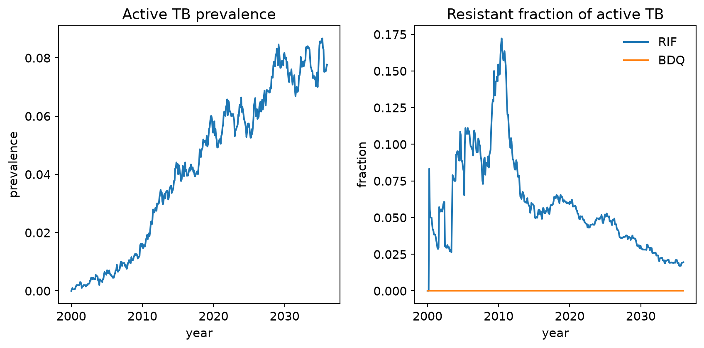
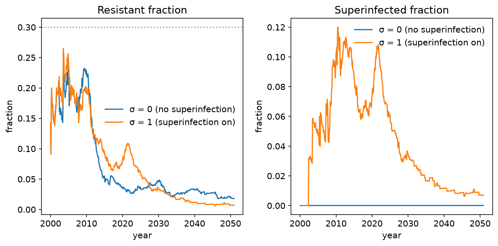
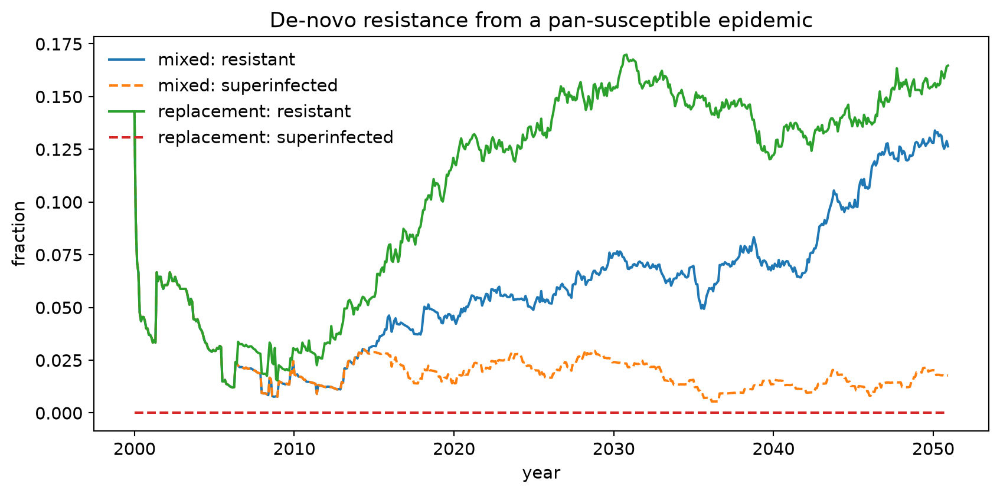
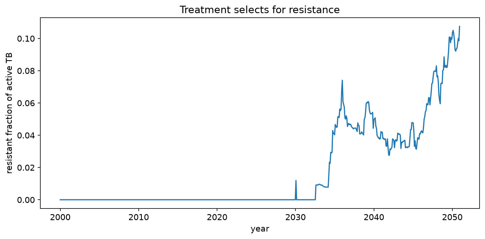
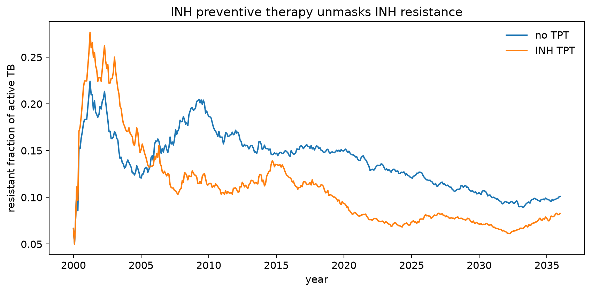
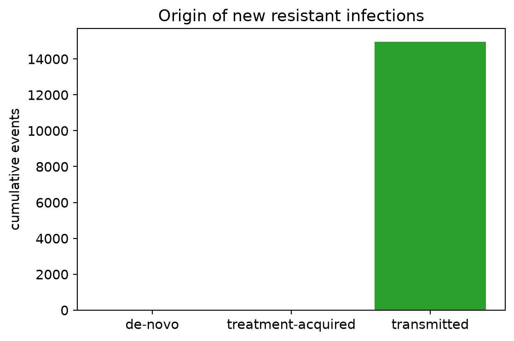

import numpy as np
import matplotlib.pyplot as plt
import starsim as ss
import tbsim
plt.rcParams['figure.figsize'] = (9, 4.5)
plt.rcParams['font.size'] = 11
def build_sim(tb, interventions=None, analyzers=None, n_agents=2000,
start='2000-01-01', stop='2035-12-31', seed=0):
"""A small multi-strain TB sim on a random contact network."""
net = ss.RandomNet(pars=dict(n_contacts=ss.poisson(lam=8), dur=0))
return tbsim.Sim(tb_model=tb, n_agents=n_agents, networks=net, demographics=[], interventions=interventions,
analyzers=analyzers, dt=ss.days(30), start=ss.date(start), stop=ss.date(stop),
rand_seed=seed, verbose=0)Drug resistance and multi-strain TB
This tutorial shows how to use TBsim’s drug-resistance / multi-strain extension (tbsim.resistance). It follows the technical specification feature by feature: defining strains, multi-strain transmission and superinfection, competition and reinfection, de-novo and treatment-acquired resistance, drug-susceptibility testing (DST) with regimen routing, treatment monitoring, and strain-aware preventive therapy (TPT).
The companion reference — the tbsim.resistance README — explains how each piece is implemented; this tutorial focuses on using it.
Setup
1. Defining strains
A strain is an n-bit resistance profile over an ordered set of drugs (bit i = resistant to drug i). For n drugs there are m = 2ⁿ possible strains, enumerated as integer ids 0 … m-1 (id 0 = pan-susceptible). Each drug carries a multiplicative transmission fitness cost r_i ∈ [0,1]; a strain’s fitness is the product of the costs of the drugs it resists.
strains = tbsim.Strains(drugs=['RIF', 'BDQ'], rel_fitness={'RIF': 0.5, 'BDQ': 0.8})
print(f'{strains.n} drugs → {strains.m} strains')
for j in range(strains.m):
print(f' id {j}: {strains.labels[j]:9s} profile={strains.profile[j].astype(int)} fitness={strains.fitness[j]:.2f}')2 drugs → 4 strains
id 0: pan profile=[0 0] fitness=1.00
id 1: RIF profile=[1 0] fitness=0.50
id 2: BDQ profile=[0 1] fitness=0.80
id 3: RIF+BDQ profile=[1 1] fitness=0.40RIF and BDQ are just user-supplied labels — nothing is hard-coded. Adding INH or a fluoroquinolone is a one-line change to drugs.
The transmission bottleneck
An infectious agent transmits at the rate of its fittest carried strain (superinfection does not reduce total infectiousness), and which strain is passed is drawn ∝ fitness. This reproduces the worked example from the spec: a source carrying {RIF} (fitness 0.5) and {RIF,BDQ} (fitness 0.4) transmits {RIF} 56% of the time and {RIF,BDQ} 44% of the time.
mask = np.array([(1 << 1) | (1 << 3)]) # one agent carrying strain 1={RIF} and strain 3={RIF,BDQ}
probs = strains.transmit_probs(mask)[0]
print(f'relative infectiousness (max fitness): {strains.max_fitness(mask)[0]:.2f}')
print(f'P(transmit RIF) = {probs[1]:.1%}')
print(f'P(transmit RIF+BDQ) = {probs[3]:.1%}')relative infectiousness (max fitness): 0.50
P(transmit RIF) = 55.6%
P(transmit RIF+BDQ) = 44.4%2. A multi-strain simulation
tbsim.TBResistant is a drop-in replacement for tbsim.TB that adds the strain overlay. Seed the initial infections across strains with init_strains (a probability vector over strain ids). Here we run a two-drug epidemic seeded mostly pan-susceptible with a little RIF resistance.
tb = tbsim.TBResistant(
drugs=['RIF', 'BDQ'],
rel_fitness={'RIF': 0.9, 'BDQ': 0.85},
beta=ss.permonth(0.35), init_prev=ss.bernoulli(0.10),
init_strains=[0.85, 0.12, 0.03, 0.0], # pan / RIF / BDQ / MDR
)
sim = build_sim(tb)
sim.run()
res = sim.results.tb
t = sim.results.timevec
fig, axes = plt.subplots(1, 2)
axes[0].plot(t, res['prevalence_active'])
axes[0].set(title='Active TB prevalence', xlabel='year', ylabel='prevalence')
axes[1].plot(t, res['frac_resist_RIF'], label='RIF')
axes[1].plot(t, res['frac_resist_BDQ'], label='BDQ')
axes[1].set(title='Resistant fraction of active TB', xlabel='year', ylabel='fraction')
axes[1].legend(frameon=False)
plt.tight_layout(); plt.show()
TBResistant records frac_resist (any resistance), frac_super (superinfected fraction), and frac_resist_<drug> per drug, alongside the usual TB results.
3. Superinfection, competition, and reinfection
An already-infected agent can acquire a second strain (superinfection). How susceptible they are depends on their disease state, via the rr_reinfection_* (σ) parameters. By default σ follows the spec’s coupling (rr_reinfection_inf = rr_reinfection_rec), and active-disease states are closed to superinfection (rr_reinfection_asy = rr_reinfection_sym = 0). Setting σ = 0 turns superinfection off.
Fitness costs drive competition: without treatment, a less-fit resistant strain is out-competed.
def resist_over_time(rr, label, **kw):
tb = tbsim.TBResistant(rel_fitness={'TX': 0.7}, # single drug, 30% fitness cost
beta=ss.permonth(0.35), init_prev=ss.bernoulli(0.12),
init_strains=[0.7, 0.3], **kw)
sim = build_sim(tb, stop='2050-12-31')
sim.run()
return sim.results.timevec, sim.results.tb['frac_resist'], sim.results.tb['frac_super']
fig, axes = plt.subplots(1, 2)
for rr, lbl in [(0.0, 'σ = 0 (no superinfection)'), (1.0, 'σ = 1 (superinfection on)')]:
t, fr, fs = resist_over_time(rr, lbl, rr_reinfection_inf=rr, rr_reinfection_non=rr)
axes[0].plot(t, fr, label=lbl)
axes[1].plot(t, fs, label=lbl)
axes[0].axhline(0.3, ls=':', c='0.6'); axes[0].set(title='Resistant fraction', xlabel='year', ylabel='fraction')
axes[1].set(title='Superinfected fraction', xlabel='year', ylabel='fraction')
axes[0].legend(frameon=False); axes[1].legend(frameon=False)
plt.tight_layout(); plt.show()
The resistant fraction starts at 30% and declines (competitive exclusion) in both cases; only with σ > 0 do superinfections (agents carrying both strains) appear.
4. De-novo resistance acquisition
Resistance can arise de novo at progression out of the latent (INFECTION) state, at a per-drug probability p_rand[drug] — each carried strain mutates independently. The mechanism is either 'mixed' (a resistant variant is added → superinfection; the default) or 'replacement' (the strain switches). Because the strain space is the full 2ⁿ, the resistant target always exists.
def denovo_run(mode):
tb = tbsim.TBResistant(rel_fitness={'TX': 0.9},
beta=ss.permonth(0.35), init_prev=ss.bernoulli(0.12),
init_strains=[1.0, 0.0], # start 100% pan-susceptible
p_rand={'TX': 0.02}, prog_resist_mode=mode,
rr_reinfection_inf=0.0, rr_reinfection_non=0.0)
sim = build_sim(tb, stop='2050-12-31'); sim.run()
return sim.results.timevec, sim.results.tb
fig, ax = plt.subplots()
for mode in ['mixed', 'replacement']:
t, r = denovo_run(mode)
ax.plot(t, r['frac_resist'], label=f'{mode}: resistant')
ax.plot(t, r['frac_super'], ls='--', label=f'{mode}: superinfected')
ax.set(title='De-novo resistance from a pan-susceptible epidemic', xlabel='year', ylabel='fraction')
ax.legend(frameon=False); plt.tight_layout(); plt.show()
Both modes create resistance; only 'mixed' produces superinfected (AB) agents.
5. Treatment and acquired resistance
Treatment is a product/delivery pair. TxR (product) sets per-strain cure probability (base_efficacy reduced by resist_penalty for each regimen drug a strain resists), the agent-level adherence that correlates outcomes across strains, and per-drug acquisition-on-failure q_acq. TxDeliveryR (delivery) initiates treatment from the active states at state-specific rates and resolves each course after a fixed duration.
On a failed course, each surviving drug-susceptible strain independently rolls for acquisition, once per regimen drug it is susceptible to (the same per-strain mechanism as de-novo), so more than one strain can acquire resistance in a single course. A latent agent selected for treatment (only via a custom eligibility) is instead cleared of its regimen-susceptible strains with certainty while any regimen-resistant strain persists (treat_latent=False, the default); treat_latent=True runs it through a full failable course.
Treatment that cures the susceptible strain well but the resistant strain poorly selects for resistance:
tb = tbsim.TBResistant(rel_fitness={'TX': 0.6},
beta=ss.permonth(0.35), init_prev=ss.bernoulli(0.12),
init_strains=[0.95, 0.05], rr_reinfection_inf=1.0, rr_reinfection_non=1.0)
tx = tbsim.TxDeliveryR(
product=tbsim.TxR(strains=tb.strains, base_efficacy=0.8, resist_penalty={'TX': 0.2},
adherence=0.9, q_acq={'TX': 0.04}),
rate_sym=ss.peryear(1.5), rate_asym=ss.peryear(0.1),
)
sim = build_sim(tb, interventions=tx, stop='2050-12-31'); sim.run()
fig, ax = plt.subplots()
ax.plot(sim.results.timevec, sim.results.tb['frac_resist'])
ax.set(title='Treatment selects for resistance', xlabel='year', ylabel='resistant fraction of active TB')
plt.tight_layout(); plt.show()
print(f"resistance acquired on treatment failure: {int(np.sum(sim.results[tx.name].n_acquired))} events")
resistance acquired on treatment failure: 4 events6. Drug-susceptibility testing and regimen routing
DST observes an agent-level resistance phenotype: it applies sensitivity/specificity at the strain level (with a per-strain observation bottleneck p_strain_obs, defaulting to strain fitness), then aggregates. Test probabilities are drawn independently per (strain, drug), so a multi-drug DST behaves like independent per-drug tests. DSTDelivery.matches(...) turns the observed profile into composable eligibility functions, so different regimens can be routed to different phenotypes.
tb = tbsim.TBResistant(drugs=['RIF'], rel_fitness={'RIF': 0.9},
beta=ss.permonth(0.35), init_prev=ss.bernoulli(0.12),
init_strains=[0.8, 0.2], rr_reinfection_inf=1.0, rr_reinfection_non=1.0)
dst = tbsim.DSTDelivery(name='dst', product=tbsim.DST(strains=tb.strains, sens=0.95, spec=0.98),
eligibility=lambda sim: sim.get_tb().active_tb.uids)
# First line treats RIF-susceptible; a (stronger) second line is routed to observed RIF-resistant cases.
first = tbsim.TxDeliveryR(name='first', rate_sym=ss.peryear(1.0),
eligibility=dst.matches(RIF=False),
product=tbsim.TxR(strains=tb.strains, base_efficacy=0.85,
resist_penalty={'RIF': 0.1}))
second = tbsim.TxDeliveryR(name='second', rate_sym=ss.peryear(1.0),
eligibility=dst.matches(RIF=True),
product=tbsim.TxR(strains=tb.strains, base_efficacy=0.8, regimen_drugs=['RIF']))
sim = build_sim(tb, interventions=[dst, first, second], stop='2040-12-31'); sim.run()
print(f"DST tests done: {int(np.sum(sim.results['dst'].n_tested))}")
print(f"first-line courses: {int(np.sum(sim.results['first'].n_treated))}")
print(f"second-line (RIF-R): {int(np.sum(sim.results['second'].n_treated))}")DST tests done: 28
first-line courses: 26
second-line (RIF-R): 5Retreatment vs. new cases
Every TxDeliveryR stamps a durable, cross-regimen tb.ti_last_treatment when it starts a course, so a delivery can distinguish agents returning after a previous course (retreatment) from genuinely new cases. TxDeliveryR.failure_case_eligibility(within=<duration>) returns a sim → uids classifier selecting agents whose last treatment was within within (pass new_case=True for the complement) — the natural way to route retreatment cases to a stronger second-line regimen.
tb = tbsim.TBResistant(drugs=['RIF'], rel_fitness={'RIF': 0.9},
beta=ss.permonth(0.35), init_prev=ss.bernoulli(0.12),
init_strains=[0.8, 0.2], rr_reinfection_inf=1.0, rr_reinfection_non=1.0)
retreat = tbsim.TxDeliveryR.failure_case_eligibility(within=ss.years(2)) # returned to care within 2 years
first = tbsim.TxDeliveryR(name='first', rate_sym=ss.peryear(1.0),
product=tbsim.TxR(strains=tb.strains, base_efficacy=0.5, resist_penalty={'RIF': 0.2}))
second = tbsim.TxDeliveryR(name='second', eligibility=retreat, supersedes=['first'], rate_sym=ss.peryear(1.0),
product=tbsim.TxR(strains=tb.strains, base_efficacy=0.85, regimen_drugs=['RIF']))
sim = build_sim(tb, interventions=[first, second], stop='2035-12-31'); sim.run()
print(f"first-line courses: {int(np.sum(sim.results['first'].n_treated))}")
print(f"retreatment courses: {int(np.sum(sim.results['second'].n_treated))}")first-line courses: 217
retreatment courses: 1267. Treatment monitoring and regimen switching
treatment_monitoring_eligibility(tx_name, after_steps) selects agents who have been on a course for a while; combined with supersedes=[...] on a second-line delivery, an ongoing first-line course is interrupted and the agent is switched — the spec’s mid-course regimen change.
tb = tbsim.TBResistant(drugs=['INH', 'RIF'], rel_fitness={'INH': 0.95},
beta=ss.permonth(0.3), init_prev=ss.bernoulli(0.10),
init_strains=[0.5, 0.5, 0.0, 0.0]) # pan + INH-resistant
first = tbsim.TxDeliveryR(name='first', rate_sym=ss.peryear(2.0),
product=tbsim.TxR(strains=tb.strains, regimen_drugs=['INH'],
base_efficacy=0.8, resist_penalty={'INH': 0.1}))
switch = tbsim.TxDeliveryR(name='switch', supersedes=['first'],
eligibility=tbsim.treatment_monitoring_eligibility('first', after_steps=2),
product=tbsim.TxR(strains=tb.strains, regimen_drugs=['RIF'], base_efficacy=0.85))
sim = build_sim(tb, interventions=[first, switch], stop='2015-12-31'); sim.run()
print(f"first-line initiations: {int(np.sum(sim.results['first'].n_treated))}")
print(f"switched to second-line: {int(np.sum(sim.results['switch'].n_treated))}")first-line initiations: 13
switched to second-line: 138. Strain-aware preventive therapy (TPT)
TPTRx sterilizes per strain: it clears only strains susceptible to every regimen drug, so a resistant strain in a co-infected agent survives and can go on to progress and transmit — the Mills–Cohen “preventive therapy unmasks resistance” dynamic. TPT that is ineffective can also select resistance, at a per-drug rate scaled by TB state.
def run_tpt(with_tpt):
tb = tbsim.TBResistant(drugs=['INH'], rel_fitness={'INH': 0.9},
beta=ss.permonth(0.35), init_prev=ss.bernoulli(0.15),
init_strains=[0.8, 0.2], rr_reinfection_inf=0.0, rr_reinfection_non=0.0)
ivs = None
if with_tpt:
ivs = tbsim.TPTSimple(
product=tbsim.TPTRx(strains=tb.strains, regimen_drugs=['INH'],
pars=dict(efficacy=ss.bernoulli(0.9), p_sterilize=ss.bernoulli(1.0))),
pars=dict(coverage=ss.bernoulli(0.5)))
sim = build_sim(tb, interventions=ivs, n_agents=4000, stop='2035-12-31'); sim.run()
return sim.results.timevec, sim.results.tb['frac_resist']
fig, ax = plt.subplots()
for with_tpt, lbl in [(False, 'no TPT'), (True, 'INH TPT')]:
t, fr = run_tpt(with_tpt)
ax.plot(t, fr, label=lbl)
ax.set(title='INH preventive therapy unmasks INH resistance', xlabel='year', ylabel='resistant fraction of active TB')
ax.legend(frameon=False); plt.tight_layout(); plt.show()
Even though the resistant strain carries a fitness cost (and would be out-competed on its own), INH preventive therapy raises its share by clearing the susceptible strain it competes with.
9. Analyzing where resistance comes from
ResistanceStats decomposes new resistance into its three origins — de-novo mutation, treatment-acquired, and transmitted — the key mechanistic output of the spec. StrainResults records per-strain active-TB counts.
tb = tbsim.TBResistant(rel_fitness={'TX': 0.9},
beta=ss.permonth(0.35), init_prev=ss.bernoulli(0.12),
init_strains=[0.9, 0.1], p_rand={'TX': 0.01},
rr_reinfection_inf=1.0, rr_reinfection_non=1.0)
tx = tbsim.TxDeliveryR(product=tbsim.TxR(strains=tb.strains, base_efficacy=0.8,
resist_penalty={'TX': 0.2}, q_acq={'TX': 0.05}),
rate_sym=ss.peryear(1.0))
stats = tbsim.ResistanceStats()
sim = build_sim(tb, interventions=tx, analyzers=stats, stop='2045-12-31'); sim.run()
df = stats.to_df(sim)
origins = {'de-novo': df.flux_denovo.sum(), 'treatment-acquired': df.flux_txacq.sum(),
'transmitted': df.flux_transmitted.sum()}
fig, ax = plt.subplots(figsize=(6, 4))
ax.bar(origins.keys(), origins.values(), color=['tab:blue', 'tab:orange', 'tab:green'])
ax.set(title='Origin of new resistant infections', ylabel='cumulative events')
plt.tight_layout(); plt.show()
print(origins)
{'de-novo': 23.0, 'treatment-acquired': 3.0, 'transmitted': 5882.0}Transmission dominates once resistance is established, with de-novo and treatment-acquired events seeding and topping it up — exactly the decomposition the specification calls for.
Summary
You have now used every major feature of the resistance extension:
Strains— the2ⁿstrain registry with per-drug fitness costs and readable labels.TBResistant— multi-strain natural history with the transmission bottleneck, superinfection, and competition.p_rand/prog_resist_mode— de-novo resistance acquisition (per drug; mixed or replacement).TxR/TxDeliveryR— strain-resolved treatment with acquisition-on-failure.DST/DSTDelivery.matches— drug-susceptibility testing and DST-routed regimens.treatment_monitoring_eligibility+supersedes— mid-course regimen switching.TPTRx— strain-aware preventive therapy and the resistance-unmasking dynamic.ResistanceStats/StrainResults— resistance-origin decomposition and per-strain tracking.
For a task-oriented, recipe-style companion — including the results glossary, a parameter cheat sheet, and known limitations — see the drug resistance user guide. For the mechanics behind each feature, see the tbsim.resistance README.